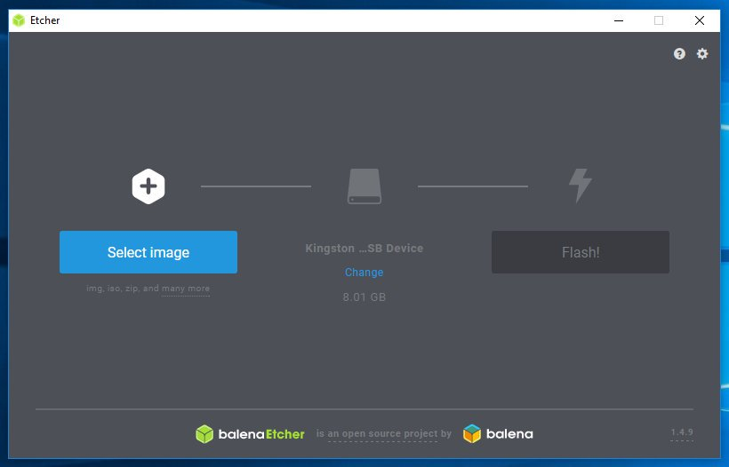
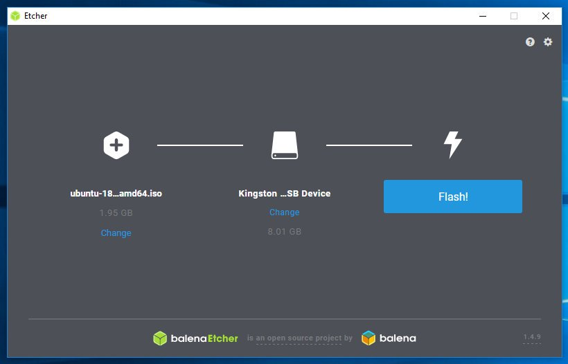
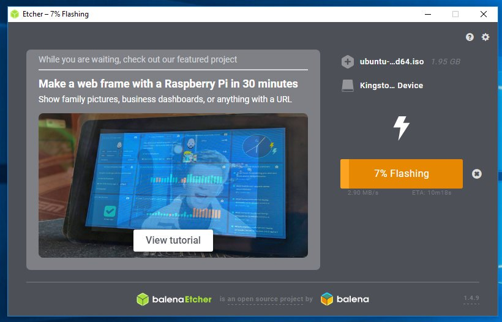
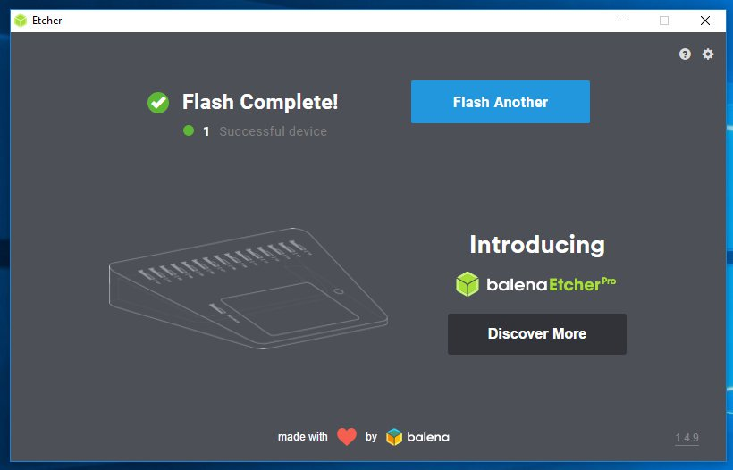

如何创建可启动的 Linux U 盘
通常，在笔记本电脑或 PC 上安装某些 Linux 发行版的新副本时，您需要一个包含要安装的发行版的可启动 USB 。
本教程将指导您完成在 Windows ， macOS 和 Linux 计算机上创建可启动 Linux U 盘所需的步骤。您可以使用此 U 盘在任何支持从 USB 启动的计算机上启动并测试或安装 Linux 发行版。
下载分发 ISO 文件
要创建可引导的 U 盘，您首先需要下载分发 ISO 文件。此文件包含要安装 Linux 发行版所需的一切。
我们将使用最新的 Ubuntu 版本，但本文中介绍的步骤适用于任何其他 Linux 发行版。
访问分发下载页面 (Ubuntu ， CentOS 等等) 并下载最新的 ISO 文件。
使用 Etcher 创建可启动的 Linux U 盘
有几种不同的应用程序可供免费使用，它们允许您将 ISO 映像刷到 U 盘。在这个例子中，我们将使用 Etcher 。它是一个免费的开源实用程序，用于将图像刷到 SD 卡和 U 盘，并支持 Windows ， macOS 和 Linux 。
转到 Etcher 下载页面，下载适用于您操作系统的最新 Etcher 版本。下载文件后，双击它并按照安装向导进行操作。
使用 Etcher 创建可启动 Linux U 盘是一个相对简单的过程，只需按照下面列出的步骤操作：
-
将 U 盘连接到您的系统并启动 Etcher 。

-
单击
Select image按钮，找到.iso文件。
-
如果您的机器只连接了一个 U 盘， Etcher 将自动选择它。否则，如果连接了多个 SD 卡或 U 盘，请确保在刷入镜像之前选择了正确的 U 盘。
-
单击
Flash image按钮，将启动写入数据到 U 盘的过程。
Etcher 会显示进度条和预计时间。
整个过程可能需要几分钟，具体取决于 ISO 文件的大小和 U 盘的速度。完成后，将出现以下屏幕，告诉您图像已写入成功。

单击
[X]以关闭 Etcher 窗口。
就这样！你的 U 盘上有一个可启动的 Linux 。
从命令行创建可启动 Linux U 盘
在本节中，我们将向您展示如何使用 dd 工具从命令行创建可启动的 Linux U 盘。此工具适用于所有 macOS 和 Linux 系统。
这是一个快速简便的过程，无需安装其他软件。
-
将 U 盘插入 USB 端口。
-
接下来，您需要找出 U 盘的名称。完成这项工作的最佳工具是
lsblk：lsblk输出看起来像这样：
NAME MAJ:MIN RM SIZE RO TYPE MOUNTPOINT sda 8:0 0 465.8G 0 disk └─ sda1 8:1 0 465.8G 0 part /data sdx 8:16 1 7.5G 0 disk └─ sdx1 8:17 1 7.5G 0 part /run/media/linuxize/Kingston nvme0n1 259:0 0 232.9G 0 disk ├─ nvme0n1p1 259:1 0 512M 0 part /boot ├─ nvme0n1p2 259:2 0 16G 0 part [SWAP] └─ nvme0n1p3 259:3 0 216.4G 0 part /在这个例子中， USB 设备的名称
/dev/sdx， 您的系统可能会不同。 -
在大多数 Linux 发行版中， USB 闪存驱动器将在插入时自动安装。在刷入镜像之前，您需要卸载 USB 设备。为此，请使用
umount命令后跟挂载点或设备名称：sudo umount /dev/sdx1 -
最后一步是将 ISO 映像刷新到 U 盘。确保使用您自己的驱动器进行更换下面命令中的
/dev/sdx，并且不要附加分区号。此外，请确保使用 ISO 文件的正确路径。sudo dd bs=4M if=/path/to/ubuntu-18.04.2-desktop-amd64.iso of=/dev/sdx status=progress oflag=sync该命令将在刷入镜像时显示进度条，该过程可能需要几分钟：
458+1 records in 458+1 records out 1921843200 bytes (1.9 GB, 1.8 GiB) copied, 147.006 s, 13 MB/s
结论
创建可启动的 Linux U 盘是一项相对容易的任务。几分钟之内，您就可以使用自己喜欢的 Linux 发行版刷新 U 盘，并使用它在 PC 或笔记本电脑上安装操作系统。